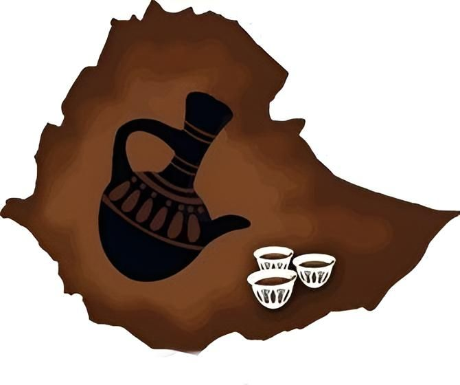
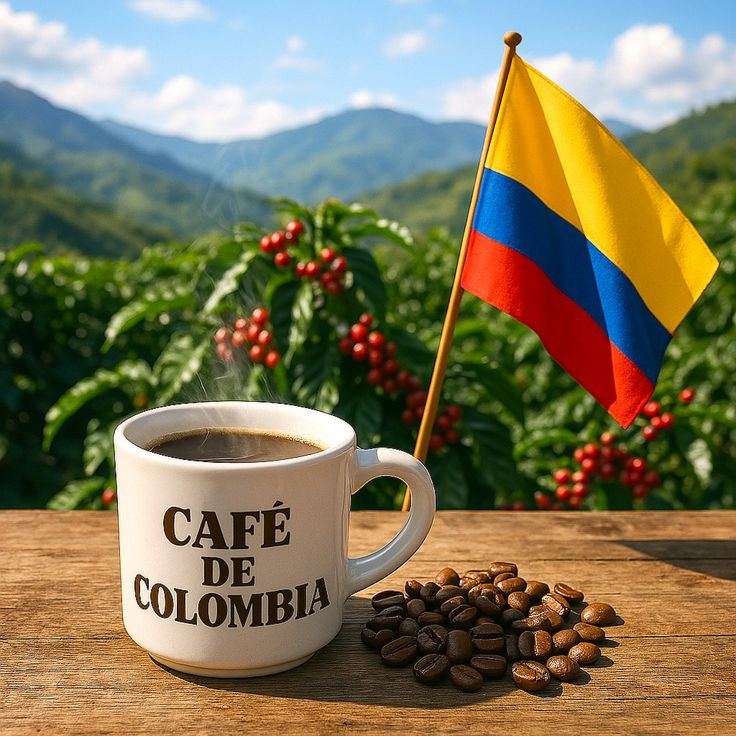
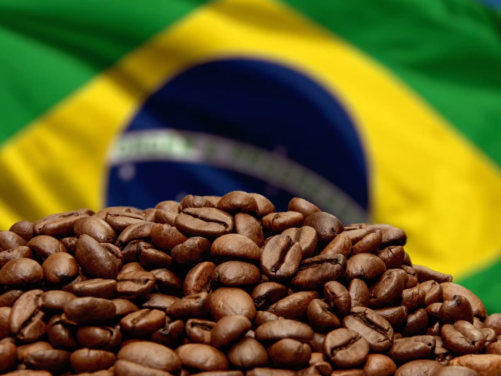
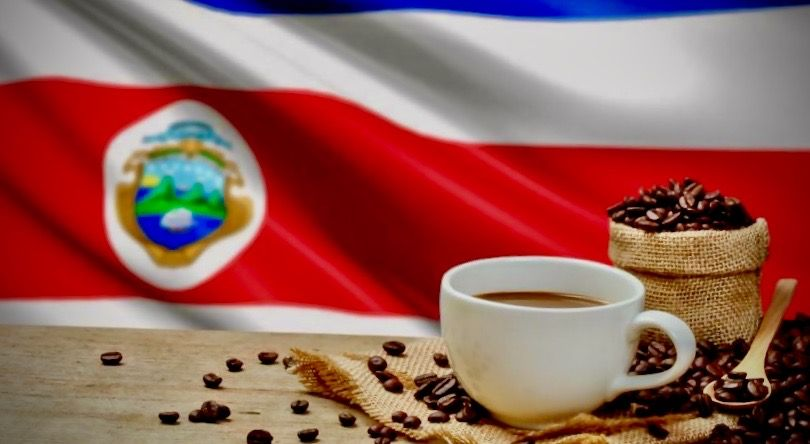

L'Origine de nos Grains
Nous sélectionnons rigoureusement nos grains auprès de producteurs locaux :

Éthiopie
Notes florales et légères.
100% Arabica
Colombie
Arômes de fruits et de caramel.
100% Arabica
Brésil
Notes profondes de chocolat et noisette.
Grand Cru
Costa Rica
Café doux et équilibré aux notes d'agrumes.
Grand Cru